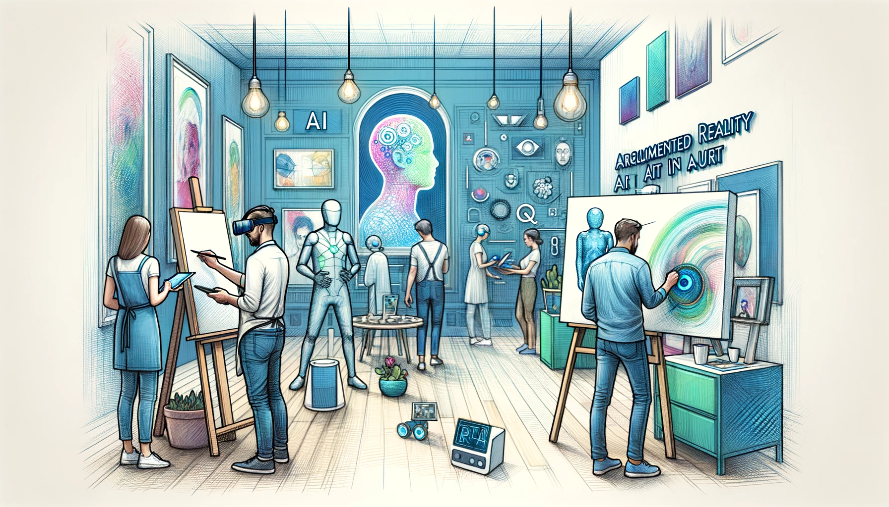
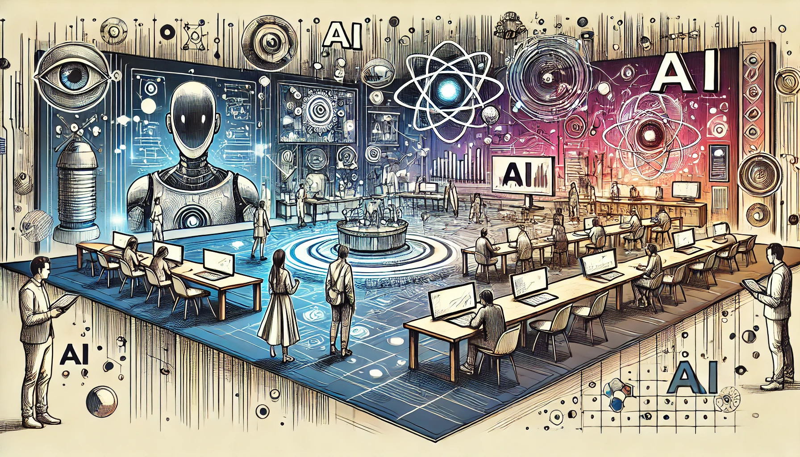
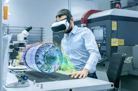

Los lenguajes de programación multimedia son fundamentales en la creación de aplicaciones interactivas, videojuegos, animaciones y experiencias audiovisuales. A diferencia de los lenguajes de programación tradicionales, estos están diseñados con características específicas que facilitan el manejo de gráficos, sonido, video y entradas del usuario. Este ensayo explora las principales características que definen el desarrollo en lenguajes de programación multimedia, analizando su impacto en la eficiencia, rendimiento y creatividad en el ámbito digital.

Librerías y APIs gráficas:
Lenguajes como C++ utilizan OpenGL y DirectX para renderizado de alto rendimiento.
JavaScript emplea Canvas y WebGL para gráficos en navegadores.
Python con Pygame permite el desarrollo de juegos 2D simples.
Animación por fotogramas y interpolación:
Sistemas como Unity (C#) y Unreal Engine (C++) incluyen herramientas de animación basadas en esqueletos (rigging) y keyframes.
2. Manejo de Audio y Video
Los lenguajes multimedia deben integrar capacidades avanzadas de reproducción, edición y sincronización de medios.
Reproducción de audio:
JavaScript usa la Web Audio API para efectos de sonido interactivos.
C# en Unity permite implementar sistemas de audio espacial para realidad virtual.
Procesamiento de video:
Python con OpenCV se usa para análisis de video en tiempo real.
C++ en aplicaciones como VLC Media Player maneja decodificación eficiente.

3. Interactividad y Control de Entradas del Usuario
La capacidad de responder a acciones del usuario es esencial en aplicaciones multimedia.
Entradas de teclado, ratón y pantalla táctil:
JavaScript detecta eventos como clics y movimientos en páginas web.
C# (Unity) permite configurar controles para videojuegos en múltiples plataformas.
Reconocimiento de voz y gestos:
Python con librerías como SpeechRecognition habilita comandos por voz.
C++ en sistemas de realidad virtual (como Oculus Rift) procesa movimientos de manos.
4. Multiplataforma y Portabilidad
Muchos lenguajes multimedia permiten ejecutar aplicaciones en diferentes sistemas operativos y dispositivos.
JavaScript + HTML5: Corre en navegadores (Windows, macOS, Linux, móviles).
Java: Funciona en cualquier dispositivo con JVM (incluyendo Android).
# (Unity): Exporta proyectos a PC, consolas, móviles y web.